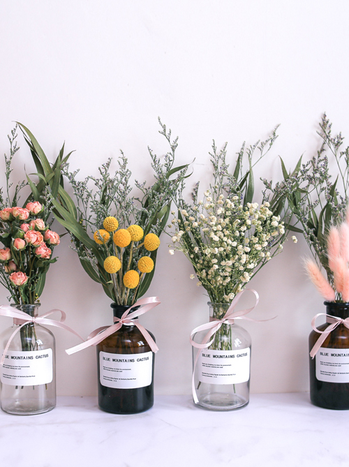

La Maison

Dry Flower
$ 12.99

Our selection of hand-dried flowers include: Roses, Tickseed, Baby’s Breath, and Hare’s Tail Grass, which are paired with Lavender. Our roses are local grown, where the Tickseed are from South America. Our Baby’s Breath dry flowers are grown and hand-dried from Egypt, while our Hare’s Tail Grass are from Ireland.
Materials
20g. 100% organically grown and dried flowers.
Add to Bag